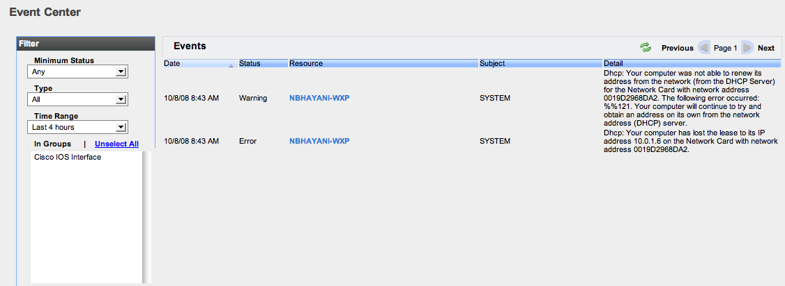

Hyperic 4.6 Documentation : Event Center
This page last changed on Jun 07, 2011 by mmcgarry.
Topics marked with * relate to features available only in vFabric Hyperic.
Event Center
The Event Center page, available on the Analyze tab in the Masthead, is a deployment wide view of events that have been logged for resources in your Hyperic deployment.
| Learn about Events in Hyperic Hyperic logs alerts as events automatically. You can configure Hyperic to log events for log messages and resource configuration changes. For more information see Understand Log and Configuration Tracking. |
Events are ordered by date, with most recent events first. To reverse the sort order, click the control in the Date column header.
Click  at the top right to refresh the list.
at the top right to refresh the list.

Filter the Event List
To limit the events displayed in the Events section, choose one or more filter options.
- Minimum Status — Select a status to limit the log tracking events in the list to those of that level or higher. Log tracking event levels, in decreasing order of severity, are:
- Error
- Warning
- Info
- Debug
- Type — Select a type to limit events in the list to those of that type:
- Log track
- Event Track
- Alerts
- Time Range — Select on the following time ranges to limit th events in the list to those occurred during the range:
- Last 4 hours
- Last 8 hours
- Last day
- Last week
- Last month
- Groups — Select one or more groups to limit the events in the list to those related to resources in the selected group(s).
Contents of the Event Center Page
The following data is shown for each event that matches the filter criteria selected in the Filter pane:
The following information is shown for each event in the list:
- Date — Date and time the event happened
- Status — For log track events, the level is shown. For alerts, the status column contains "alert".
- Resource — The name of the resource that caused the event
- Subject — For an alert, the alert name; for a Nagios check, the plugin name, including path.
- Detail — Information about the event detail or triggering condition.